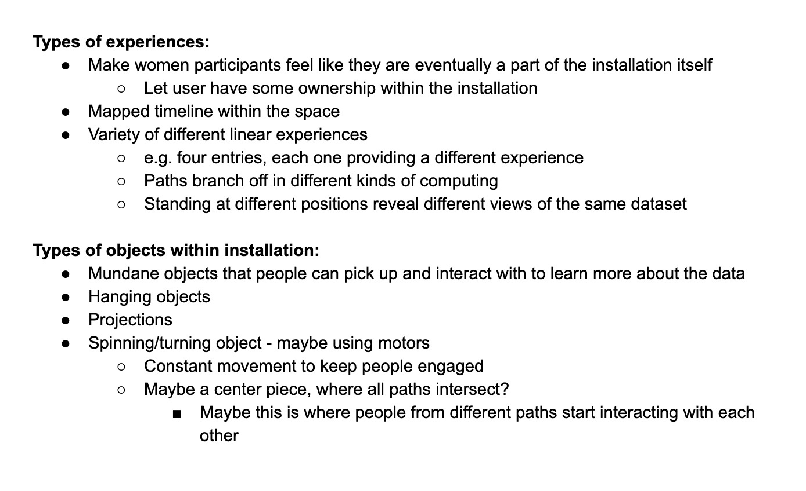
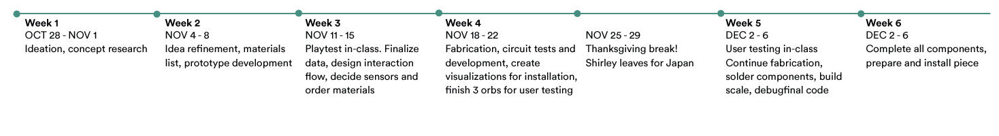
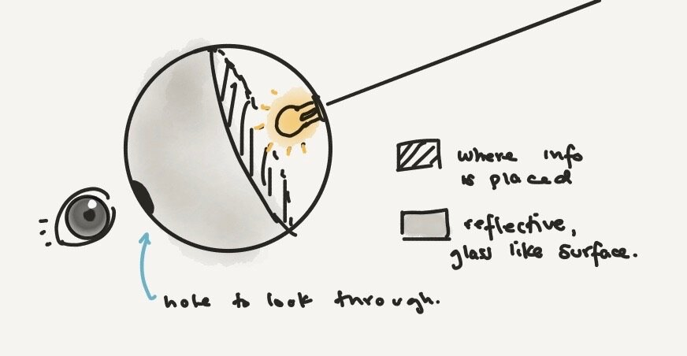
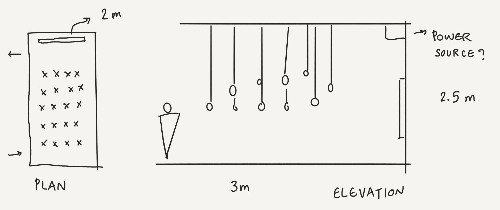
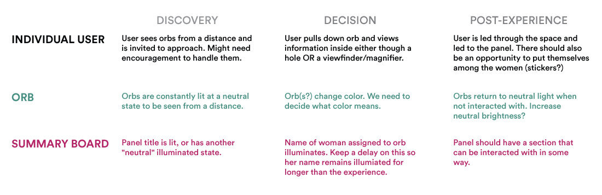
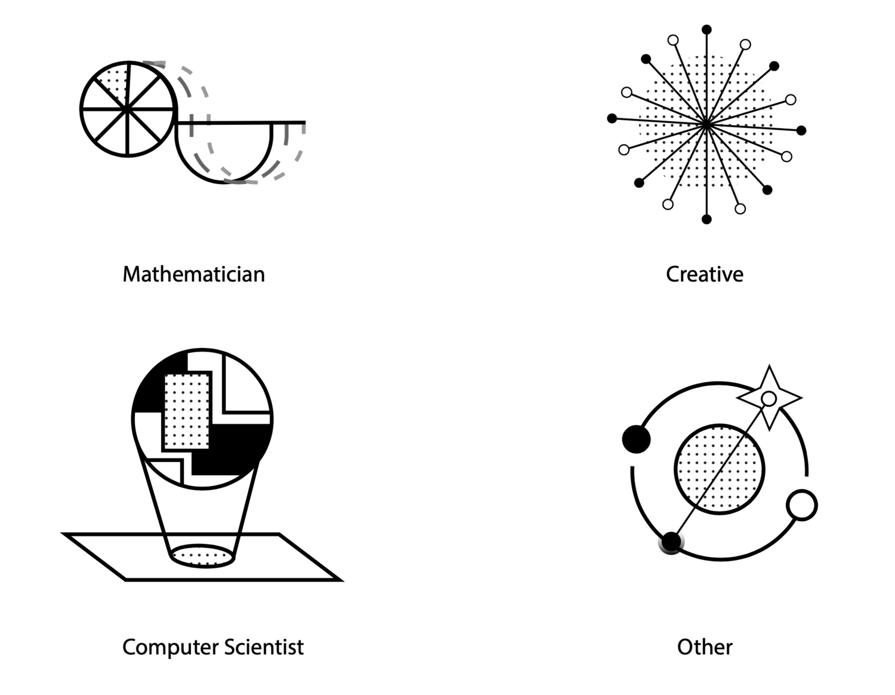
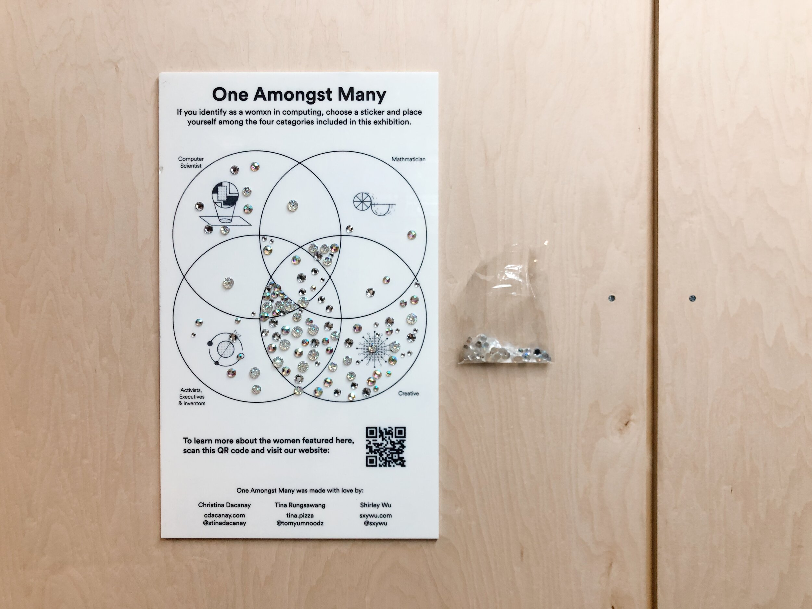

Creating a Physical Data Visualization
One Amongst Many is a love letter to many of the often overlooked women in the computing field who accomplished incredible milestines.
This physical data visualization installation was a 6 week design project completed in collaboration with Tina Rungsawang and Shirley Wu. Illuminated orbs containing biographical information about the women are suspended from the ceiling; they are placed chronologically in a field based on their times of accomplishment. Each orb will light up to maximum brightness when picked up by a viewer, while also prompting other orbs within its cohort to also shine. All orbs start off at near complete dimness. The more times each orb has been interacted with, the brighter its neutral state gets over time, giving the entire installation a visualization of its recent interactions.
Information on each woman can be found on the project website.
Project Management
Visual Design
Fabrication
Copywriting
Illustration

Concept
Shirley reached out to Tina and I to collaborate on a broad ambition she had while at ITP: to create a physical data visualization. It didn’t take long for us to settle on our subject the history of women in computing. Acknowledging and celebrating the women in computing who have been diminished throughout history seemed like a worthwhile pursuit in our first semester at ITP. Data visualizations are by nature educational and we wanted to bring that education a step further with a physical experience, and an opportunity to count one’s self among the women featured in the piece.
We collectively challenged ourselves to try things we had never attempted to do before (in code, electronics, fabrication, installation). We brainstormed with the ideals in mind: unlimited time, space, resources, but keeping in mind that we needed to be flexible. This allowed us to dream big and adapt quickly.
 Brainstorming & First Prototype
Our research was two-pronged: the data for women in computing was scraped from Wikipedia. We also compiled interactive installations and art to inspire us. One piece that stood out was Judith G Levy’s Memory Cloud. We loved the visual effect of the ‘cloud’ in space, and the interaction of investigating. This magnification encourages users to look closer, inspect, and have a personal relationship with the photographs in the cloud. We wanted to emulate this inspection, and so the idea of a field of objects that were interactive became integral to our vision.
Shirley did the bulk of the data collection, which you can read about here (link incoming). We had a list of about 30 women we wanted to highlight, and we painstakingly voted on who we felt should be represented in this small test case. We tended toward women who were generally less known and had impactful accomplishments.
We also investigated many different materials we could use for our data points. Fillable Christmas ornaments presented themselves as a great option because they were 1) easily affordable, 2) aesthetically pleasing, 3) we were able to easily open and close them to access the components inside.
 Draft Experience Map
Surprisingly, many of these experiences remained unchanged. We had initially wanted to fabricate an interactive board that also reacted to the orbs, but the fabrication challenges faced early on meant that we scrapped the panel’s interactivity to focus on the orbs’ interaction being successful and effective.
Playtest
We collected feedback from advisors and peers by demonstrating a low-fidelity prototype. We offered no direction during this stage to see how users interacted with the objects, and if they understood our system. We also asked interview questions after the experience and had many helpful conversations.


Feedback & Observations
The interaction was not immediately clear to most people. Some users either wanted to swing the orbs and play, or not touch them because they looked like art objects. Light is a hugely important element in the interaction. We only had one prototypes illuminated during the play tests, and most people said they would react differently if they all were illuminated and responsive. People under 5’5” could readily see some of the information inside the orbs; people over that height had no clue there was something inside. Users who saw other people reading the orbs immediately understood the interaction and followed suit.
Modifications:
We decided to include a “tutorial orb” that tells the user more about the project, and how to interact. Once a person saw another user interacting correctly, the issue of being afraid of touching the orb seemed to solve itself. The information panel inside of the orb should be tilted, giving it more visibility. We noticed that the height of the orb was critical to the user’s interaction. We agreed to re-design and test optimal heights. We decided to group the women into four groups that can be differentiated by color or behavior, to add more variety to the orbs.
Revision in Material and Interaction
We altered the interaction flow slightly to compensate for the lack of interactive board. After testing with a variety of components, we settled on ball tilt switches for our sensors and neopixels for our source of internal illumination, and purchased 7ft RJ11 phone cords. We also decided to group the women into 4 broad categories: computer scientists, creatives, mathematicians and our “other” group containing everything from CEOs to inventors to activists.

Final User Testing
During week 6, we completed a test case of 3 orbs lighting up as expected on the bread board. Again, with support from classmates and professors, we did a usability test to gauge user reactions. In this round of research, we focused on refining the details of our interaction and system communications.


Interaction & Usability Test: The lights changed everything about the interaction. Users felt much more like they understood the interaction and behaved more predictably. The orbs were reaching full brightness far faster than expected Keeping all the wires organized for multiple orbs is imperative Fading the neopixel from neutral to full brightness would be more visually appealing
Modifications: We need to develop an internal system to mark which cords go to which orbs, and where they all need to be wired in the Arduino Changed the incrementation of the orbs brightness from 5 to 1 per tilt The acrylic chosen for the biographic information would need to be semi-opaque to keep the neopixel from making the text too bright to read Modified the debounce on the extremely sensitive tilt switches

Fabrication & Scaling
Our major challenge in fabrication was scalability: it was easy enough to make 3 functional orbs, but to create 17 that behaved reliably and could be debugged easily was an intense design challenge. We were also designing a spacial installation for an unknown space, which meant we needed to design everything as units that could be taken apart and moved easily.
The orbs originally came with tabs. Because we needed the orbs to hang in a different direction, I sanded the sides of around 30 orbs (before we knew how to secure them, they broke often!) and drilled holes into the tops with a stepper bit. This way we could house the electronics inside plastic orb, while still opening them easily while the information panel sat inside. The tilt switches were highly sensitive, so we needed to angle with header pins so that they could be adjusted to turn on just as the orbs were being tilted in the correct direction.
Tina and I spent over 30 hours soldering and assembling the components for the orbs. After every orb was completed we kept testing and debugging to ensure everything was working in a stable way. Once we moved from an Arduino Uno to an Arduino Mega, we needed careful markers to indicate which orb had each woman represented, what orb belonged to which cord, and how that was represented in the code. We would wire each orb and tested the code to make sure it would be stable and reliable before the install. We created a variety of visualizations to help us keep track of everything before the Winter Show. We hung wooden beams from the ceiling and drilled holes for the phone cables to slip through. We also designed the orbs so that they were taped on the exterior, making them more secure but easy to open to fix the hardware inside.
 Exhibition
We scaled up the size of the piece for the ITP Winter Show to great effect. Tina and I focused on re-installing the orbs with more reliable connections, and Shirley whipped up a project website in record time (viewed best on mobile). Over a two hundred people interacted with One Amongst Many and we received such positive, heartwarming feedback. Lots of women of varying ages talked to us about how much it meant to them that they were learning about these women who they had never heard of. The orbs worked reliably, the effect was beautiful, but the most rewarding experience was watching people put themselves on the summary board. Some children speculated on what they want to become, some women modestly admitted to being computer scientists and inventors, but most importantly I don’t think a single person felt like they were alone.
The Dream Team
It was such a joy to collaborate with Tina and Shirley; we are a real dream team. Our different backgrounds were essential to the success of the project, and I learned so much from their expertise and humor. The supportive and collaborative environment was hugely helpful, especially because at different times we all suffered from our own ambition! We had so much fun, and I’m very proud of the three of us. Our advisors, Jeff and Danny, were extremely encouraging and gave such helpful feedback. Special shout outs to residents Anthony Bui and Jesse Simpson for their electronics help, and to Nok Jangkamolkulchai for installation assistance and for taking beautiful photos.